Tropical cyclones
A tropical cyclone is an area of low atmospheric pressure which produces a system of strong winds and heavy rain around a circulation center. In the Philippines, tropical cyclones are generally referred to with the umbrella term "bagyo", which can vary from very weak storms to supertyphoons.

Canonical sources
Multiple sources of information exist for meteorological data on a given tropical cyclone. For this reason, it is usually hard to determine which source is the most accurate. To address this, the following policy applies to all meteorological information that can be found on tropical cyclone resource objects:
- All meteorological information MUST be sourced from the Philippine Atmospheric, Geophysical and Astronomical Services Administration (PAGASA).
- Meteorological information SHOULD be gathered from Tropical Cyclone Bulletins, but MAY also be sourced from the PAGASA website or official social media, as required.
- Additional meteorological information MAY be sourced from other agencies, but MUST be clearly marked as such.
The focus on Philippine government agencies reflects the purpose of this specification: to provide information for Philippine events. However, context from other agencies are sometimes also important for a more complete picture of the event.
Basic information
- All tropical cyclone resource objects MUST have a
typeofcyclone. - All tropical cyclone resource objects MUST have an
international_nameproperty.- It MUST be a string containing the international (JMA-designated) name of the tropical cyclone, if any.
- In the absence of an international name, this property MUST be
null.
- All tropical cyclone resource objects MUST have a
local_nameproperty.- It MUST be a string containing the international (PAGASA-designated) name of the tropical cyclone, if any.
- In the absence of an international name, this property MUST be
null.
- All tropical cyclone resource objects MUST have an
identifiersproperty, if identifiers exist.- This property MUST be an object.
- This object MUST contain the following properties, if identifiers exist:
jma: The JMA-designated ID of the tropical cyclone (e.g.2202), if any.jtwc: The JTWC-designated ID of the tropical cyclone (e.g.02W), if any.wikidata: The Wikidata entity ID of the tropical cyclone (e.g.Q106493857), if any.ibtracs: The International Best Track Archive for Climate Stewardship (IBTrACS) cyclone ID of the tropical cyclone (e.g.2021104N08138), if any.
- If there are no additional identifiers for this storm except its name,
this property MUST be
null.
- Tropical cyclone resource objects MAY have a
currentproperty.- This property MUST be
falseif it is no longer active at the time of production. - This property MUST be a meteorological information object if it is active at the time of production.
- This property MAY be omitted if the validity of the information
has lapsed (
valid_untilis in the past).
- This property MUST be
Meteorological information
Meteorological information exists in four places:
- in the
peakproperty, where peak meteorological data is stored; - in the
currentproperty, where current meteorological data is stored; - in the
archiveproperty, where historical meteorological data is stored; - in the
forecastproperty, where forecast meteorological data is stored.
Meteorological information objects contain relevant information about a storm's intensity, position, and movement.
- Meteorological information objects MUST follow the disaster event current information object.
- Meteorological information objects MUST have an
issuing_agencystring property with the proper issuing agency information (see below). - Meteorological information objects SHOULD have a
categorystring property with the storm's category according to the issuing agency, if applicable. - Meteorological information objects SHOULD have a
windsnumber property with the storm's maximum sustained winds in knots.- This value MAY be a decimal if precision will be lost due to unit conversion.
- Meteorological information objects SHOULD have a
gustsnumber property with the storm's maximum gusts in knots.- This value MAY be a decimal if precision will be lost due to unit conversion.
- Meteorological information objects SHOULD have a
pressurenumber property with the storm's minimum central pressure in millibars. - Meteorological information objects SHOULD have a
centerproperty with the storm's current position.- This property MAY be an object.
- This object MUST have a
latitudenumber property with the storm's current latitude in decimal degrees. - This object MUST have a
longitudenumber property with the storm's current longitude in decimal degrees.
- This object MUST have a
- This property MAY be a two-number tuple, containing a latitude and longitude respectively.
- Southern latitudes MUST be negative.
- Western longitudes MUST be negative.
- The property MUST be either an object, a tuple, or undefined.
- This property MAY be an object.
- Meteorological information objects SHOULD have a
movementproperty with the storm's current movement.- This property MAY be a localizable string.
- This property MAY be an object.
- This object MUST have a
directionnumber property with the storm's current direction in degrees. - This object MUST have a
speednumber property with the storm's current speed in knots.
- This object MUST have a
- The property MUST be either a string, an object, or undefined.
- If no datum is available for the above, the property MUST be undefined.
- Meteorological information objects SHOULD have a
citationproperty, set to a citation object or array.
Bulletins
Bulletin data is available for some meteorological information objects. The bulletin data exposes information about the bulletin from which the information was sourced.
- Bulletin data objects MUST be valid meteorological information objects.
- Bulletin data objects MUST have a
bulletinproperty with the constant boolean valuetrue. - Bulletin data objects SHOULD have a
titlestring property, if applicable. - Bulletin data objects SHOULD have a
summarystring property, if applicable. - Bulletin data objects SHOULD have a
sequence_nonumber property, if applicable.- This property MUST be the sequential number of the bulletin that the object references, if available.
- Bulletin data objects MUST have a
finalboolean property.- This property MUST be
trueif the bulletin is the final bulletin for the storm. - This property MUST be
falseif the bulletin is not the final bulletin for the storm.
- This property MUST be
Issuing agency
The issuing agencies for tropical cyclone information must be set to the acronym of the agency which issued the information in uppercase.
PAGASA: Philippine Atmospheric, Geophysical and Astronomical Services AdministrationJMA: Japan Meteorological AgencyJTWC: Joint Typhoon Warning Center
If the above agencies are not in use, or the acronym would otherwise cause confusion, use the CCCC code of the issuing agency instead, as defined by the World Meteorological Organization (WMO) in WMO Publication No. 9, Volume C, Chapter I, Catalogue of Meteorological Bulletins.
Peak information
Peak information is stored in the peak property.
- This property MUST be set to the meteorological information object at which the tropical cyclone is at its lowest minimum central pressure.
- This MUST NOT refer to a point in the future.
- This MUST have its
valid_sinceproperty set to the time at which the peak intensity was achieved. - This MUST have its
valid_untilproperty set to the time at which the - peak intensity was no longer valid.
- In the event that a minimum central pressure is reached multiple times, the peak information MUST be set to the earliest time at which the lowest minimum central pressure was achieved.
Current information
Current information is stored in the current property. This property
MUST be set to the current meteorological information object
for the tropical cyclone, or false if the cyclone is no longer active.
This property MAY be a bulletin data object, if supported.
Archive information
Archive information is stored in the archive property. This property
MUST be set to an array of past meteorological information objects
or bulletin data objects for the tropical cyclone. The
current information MUST NOT be found in the archive array. The
archive array MAY be ordered chronologically, with the most recent
first.
Forecast information
Forecast information is stored in the forecast property. This property
MUST be set to an array of future meteorological information objects
or a single future meteorological information object for the tropical cyclone,
if forecasts have been provided by the issuing agency. The forecast array
MAY be ordered chronologically, with the soonest first.
Warnings
Tropical Cyclone Wind Signal (TCWS) warnings are issued by the PAGASA in areas where tropical cyclone winds are expected to occur. This property of the tropical cyclone resource object is highly specific to the TCWS.
- The
warningsproperty MUST be an object with signal level properties"5","4","3","2","1", and metadata properties"valid_until"and"valid_since". - The
warningsproperty MUST have avalid_untilstring property.- This property MUST be set to the date and time at which the TCWS warnings are no longer valid.
- The
warningsproperty MUST have avalid_sincestring property.- This property MUST be set to the date and time at which the TCWS warnings became valid.
- The
warningsproperty MAY contain acitationproperty. - The level properties of
warningsSHOULD be ordered in decreasing severity. - Each level property represents a TCWS warning level, from TCWS #1 to TCWS #5.
- Each level property in
warningsMUST be an array of warning objects.
Areas
An area here refers to a province, municipality, island, island group, or barangay.
- All area objects MUST have a
namestring property.- It MUST be set to the name of the area as it appears in the bulletin.
- All area objects MUST have a valid
psgcproperty, if one is available.
Warning objects
A warning area is an area where a TCWS warning is in effect. These have varying granularities, depending on the extent and intensity of the storm. These may encompass part of an area, or the entirety of it.
There has been a lot of discrepancy on how TCWS warnings have been issued. In some cases, TCWS warnings are applied to entire provinces, and sometimes only to very specific portions of municipalities or islands. The following policy should be applied in producing and implementing TCWS warnings objects:
- TCWS warning objects MUST be a valid area object.
- TCWS warning objects MUST have a
partialboolean property.- This property MUST be
trueif the warning is applied only to a portion of the area referenced byname. - This property MUST be
falseif the warning is fully applicable to the area, with no other parts of the area under a higher TCWS level.
- This property MUST be
- If a warning has been raised only for a section of an area, the warning area
MUST have its own TCWS warning object with
partialset totrue.- Such an object MUST have an
includesobject property.- The object
typeproperty MUST be set to"section" - The object MUST have a
termstring property, set to the term used in describing the part (e.g. "portion", "region", etc.) - The object MUST have a
partstring property, set to the part of the area which is under the warning (e.g. "northwestern").
- The object
- Such an object MUST have an
- If a warning has been raised only for a "mainland" area:
- The
typeproperty MUST be set to"mainland" - The
partandtermproperties MUST be undefined
- The
- If a warning has been raised only for the rest of an area:
- The
typeproperty MUST be set to"rest" - The
partandtermproperties MUST be undefined
- The
- For sections, mainlands, and "rest of"s:
- The
includesobject MUST have anareasarray property. - For every included area in the warning, the
areasarray MUST contain a valid area object. This MAY be an empty array if thepartis"rest"or"mainland"and no areas were explicitly mentioned in the bulletin.- Islands that are part of the included areas in the warning MAY
be given a valid
psgcproperty if one is available, as long as the entirety of the island is within the jurisdiction of the area.
- Islands that are part of the included areas in the warning MAY
be given a valid
- The
- Islands which are not included areas of a warning MUST be given their own TCWS warning object if they are under a TCWS warning, even if the island is part of a larger area which is also under a TCWS warning.
- There MUST be a TCWS warning object for the highest possible granularity.
- If a warning has been raised for an entire province, with no higher or lower warnings for specific municipalities in the province, there MUST only be one TCWS warning object for the entire province.
- If a warning has been raised for a specific municipality, it MUST have its own TCWS warning object. If the rest of the province is under a different warning, the province MUST have its own TCWS warning object.
- If a warning has been raised for a specific portion of a municipality,
it MUST have its own TCWS warning object and MUST have the
part/includesproperty set appropriately. - If a warning has been raised for the rest of a province or municipality,
where a specific portion of the province or municipality has been issued
a higher warning level, the province or municipality MUST have its
own TCWS warning object with the
part/includesproperty set appropriately. - If an area is not under any TCWS warning, it MUST NOT have a TCWS warning object.
- The warning object MAY contain a
citationproperty.
Philippine Standard Geographic Code
TCWS warning objects and the areas they reference MUST have a
psgc Philippine Standard Geographic Code (PSGC) string property. This aids
in determining specific areas which are under a TCWS warning on a map
and allows easy machine processing of affected areas.
- This property MUST be a string containing the PSGC of the area.
- This property MUST be a 10-digit PSGC.
- This property MUST be a valid PSGC.
- Provinces MUST have a PSGC ending in
00000. - Municipalities MUST have a PSGC ending in
000. - If no valid PSGC exists for the area, this property MUST be
null.
Example conversions
TCWS warning object for the entire province of Albay:
TCWS warning object for the City of Manila, under the name "Manila":
TCWS #2 for the extreme southern portion of Bulacan, TCWS #1 for the rest of Bulacan:
{
"2": [
{
"psgc": "031400000",
"name": "Bulacan",
"partial": true,
"includes": {
"type": "section",
"term": "portion",
"part": "extreme southern",
"areas": [
{
"psgc": "0301404000",
"name": "Bocaue"
},
{
"psgc": "0301405000",
"name": "Bulakan"
},
{
"psgc": "0301411000",
"name": "Marilao"
},
{
"psgc": "0301412000",
"name": "Meycauayan"
},
{
"psgc": "0301414000",
"name": "Obando"
}
]
}
}
],
"1": [
{
"psgc": "031400000",
"name": "Bulacan",
"partial": true,
"includes": {
"part": "rest"
}
}
]
}
TCWS #5 for the eastern portion of Babuyan Islands (Camiguin Island).
TCWS #4 for Cagayan. Note that the Babuyan Islands is not given a psgc
property, but Camiguin Island was given a psgc property as it is within
the jurisdiction of Calayan. This behavior is not required, and exists
as a convenience for map rendering.
{
"5": [
{
"name": "Babuyan Islands",
"partial": true,
"includes": {
"type": "section",
"term": "portion",
"part": "eastern",
"areas": [
{
"psgc": "0201509000",
"name": "Camiguin Island"
}
]
}
}
],
"4": [
{
"psgc": "0201500000",
"name": "Cagayan",
"partial": false
}
]
}
Canonical definition
The canonical definition for this resource is maintained in its TypeScript type definition.